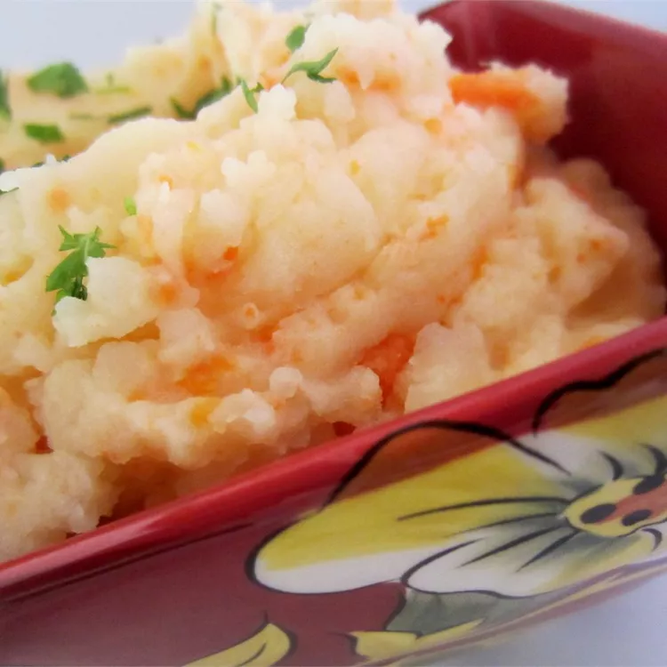

Clapshot

Clapshot is a Scottish vegetable dish that‘s traditionally served as an accompaniment to haggis, beef, pork, lamb, or game.
Ingredients
- 1 pound baking potatoes, peeled and cubed
- 3/4 pound turnips, peeled and cubed
- ¼ pound carrots, peeled and cubed
- 1 teaspoon salt
- 2 tablespoons butter, cubed
- 3 tablespoons heavy cream
Steps
- Place potatoes, turnips, carrots, and salt into a Dutch oven. Fill with water to cover vegetables and bring to a boil over high heat. Reduce the heat to medium-high and boil until vegetables are tender, 20 to 25 minutes.
- Drain and mash vegetables with a potato masher. Spoon mashed vegetables into a serving dish. Top with butter and drizzle with cream.